TCU smart
学食の利用をもっと快適にする混雑解消サービス
テーマのみが与えられた状態から、解くべき課題そのものを自分たちで発見し、129名の調査で検証して打ち手まで設計した。
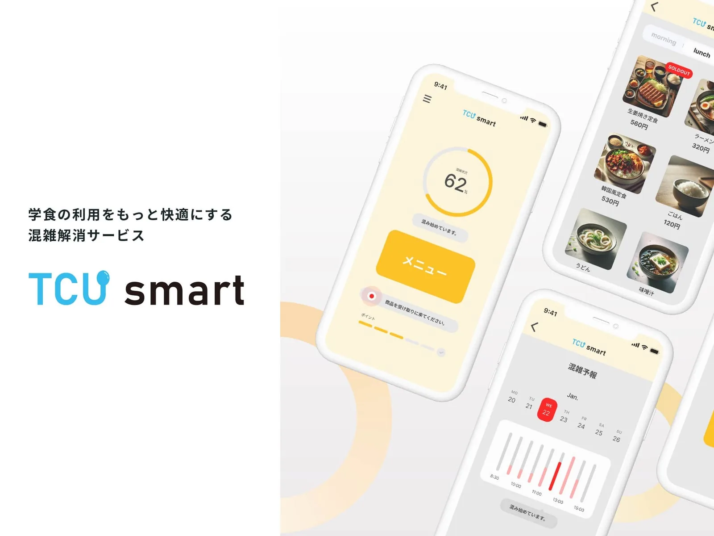
01Overview — 待つ時間を減らし、食べる時間を増やす。
次の講義の準備をしたい。友達とゆっくり食べたい。でも、食堂の行列であっという間に時間が無くなる。 そんな学生の悩みを「TCU smart」が解決します。
02Project Info
- ツール
- 製作形態
- 授業内課題(グループワーク)
- 製作時期
- 学部3年
- 製作期間
- 3カ月(2024.10〜2025.01)
- 人数
- 5人
- 役割
- リーダー・UIデザイン
03Background — 課題設定
与えられたのは『身近な現状をより良く変革せよ』というテーマのみ。 何を課題として設定するか自体が、最初の意思決定だった。 他学科の学生と「より良い社会づくり」への提案に挑み、自分たちが変えたい現状を絞り、 そこに潜む問題の本質を見極めて最適解を選択しました。
学食の混雑を課題として設定
食券を買うために並ぶ仕組みが非効率だと感じた/食べきれず残してしまったことがある/座席確保のための無駄な移動が多い/券売機のメニューが分かりづらい、というメンバーの実体験を洗い出し、共通して不満が集中していた学食の混雑を課題として設定した。
キャッシュレス決済などを搭載したモバイルオーダーアプリで、混雑が緩和されるのでは?
食べるまでの「並ぶ」工程が多いことに着目し、スマホで注文までの操作ができるとストレスなく食堂を利用できるのではないかと考えた。
04Team — メンバーの強みを起点に役割を設計
チームは他学科の学生を含む5名。専門も得意分野も異なるメンバーだったため、 均等に作業を分けるのではなく、各メンバーの強みが最も活きる役割をリーダーとして設計した。 この設計により、思いつきのアイデアではなく、実データと技術的裏付けに基づいた提案に仕上げることができた。
CADが得意なメンバー
実際の食堂の3Dデータを作成してもらい、それを根拠として座席配置の改善案を設計した。
情報系のメンバー
Wi-Fi接続数による混雑人数の把握が技術的に実現可能かを検証してもらい、アイデアの実現性を担保した。
コミュニケーションが得意なメンバー
129名へのアンケート調査の依頼・配布を担当してもらい、短期間で必要なサンプル数を確保した。
05Research — 現状を調べる
東京都市大学の学生129名にアンケート調査を実施。価格・味・混雑状況・営業時間・座席数・総合的な満足度を5段階で評価しました。 味や営業時間に対する満足度は高い一方で、価格・混雑状況・座席数への不満が高い傾向にありました。
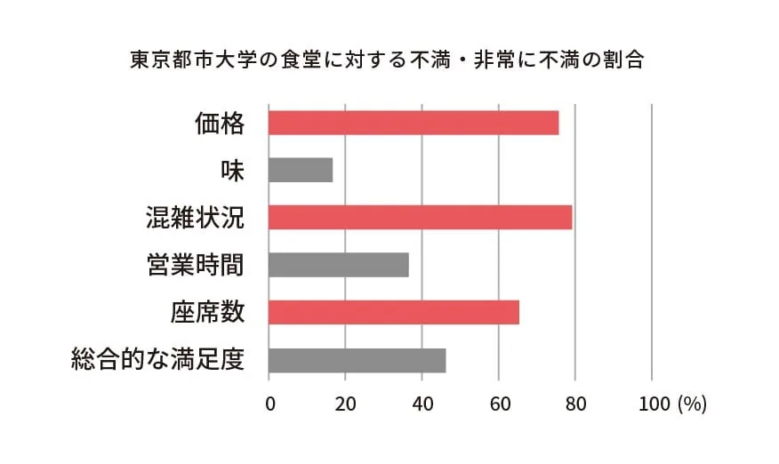
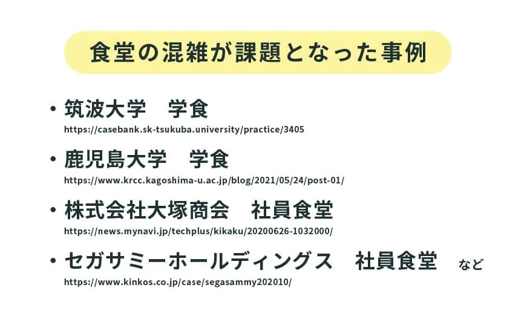
他の食堂でも同様の課題があるのかをインターネットで調査したところ、筑波大学・鹿児島大学の学食、 株式会社大塚商会・セガサミーホールディングスの社員食堂など、「食堂の混雑」の課題を抱えていた事例が散見されました。 さらに実際の食堂を観察するフィールドワークを行い、平日2限後が最も混む・食券売り場が最も混雑する・使われづらい座席がある、 という3つの気づきを得ました。
06Idea — 混雑解消のための3つの打ち手
アンケートとフィールドワークから見えた真因は、①利用者の時間帯集中、②非効率な座席配置、③現金決済の遅延の3つ。 この3つの真因それぞれに対応する形で、3つのアイデアを検討しました。
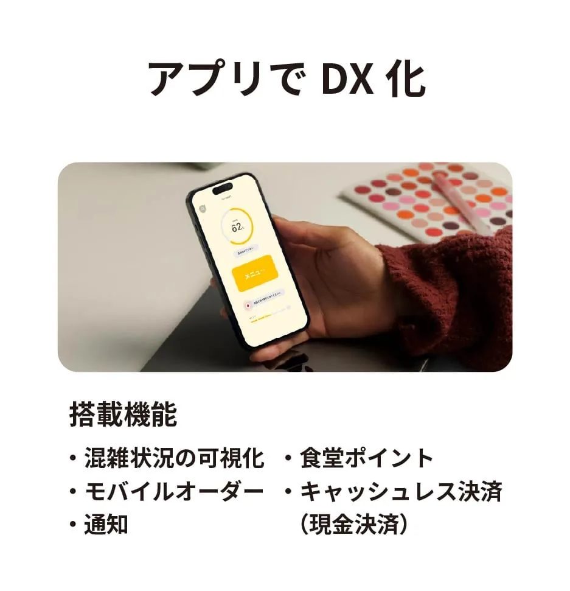
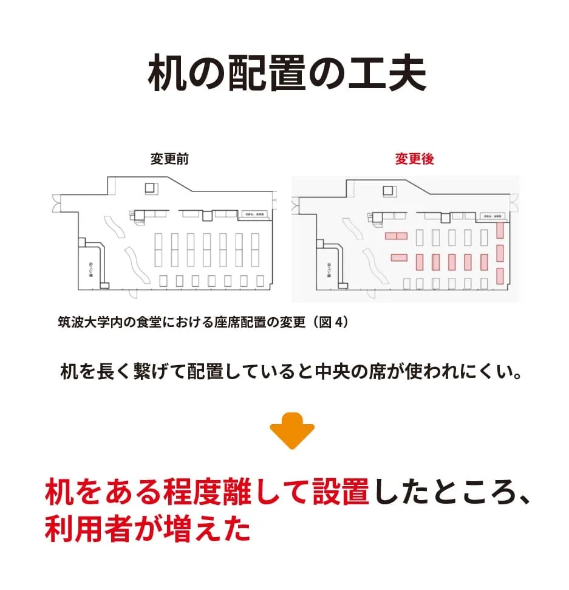
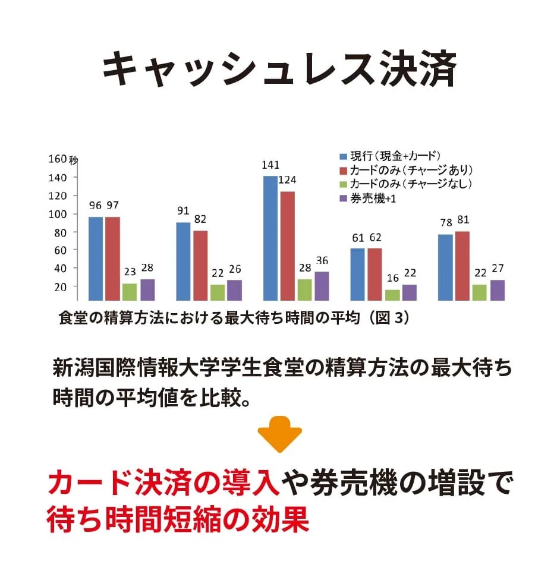
これらを実現すると、食堂の混雑解消に繋がると考えた。
07How it works — TCU smartでモバイルオーダーをする
全体的に暖色を使用することで食欲の増進に繋げ、メニュー画像の表示でスムーズな商品選択を可能にしました。
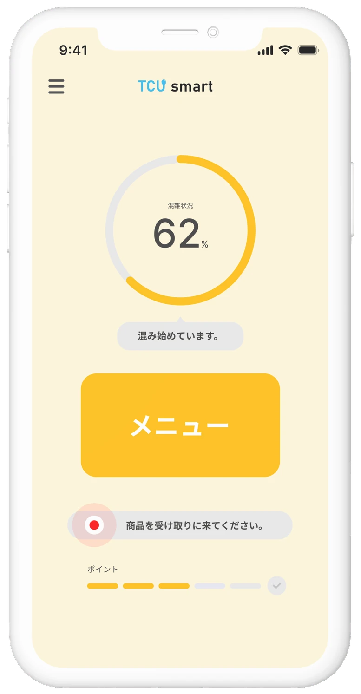
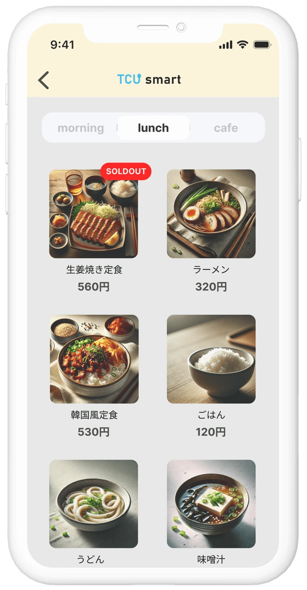
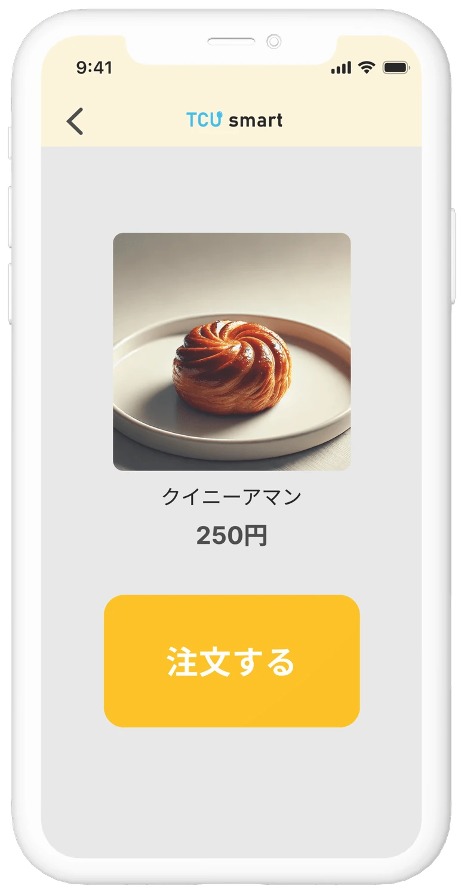
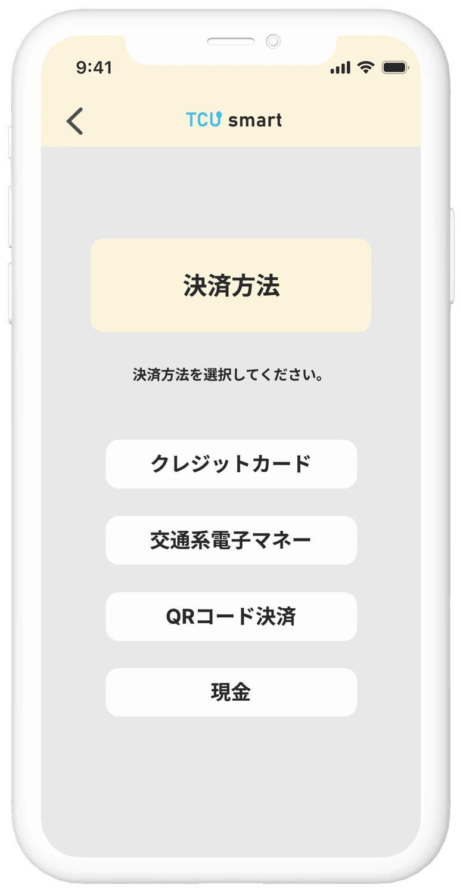
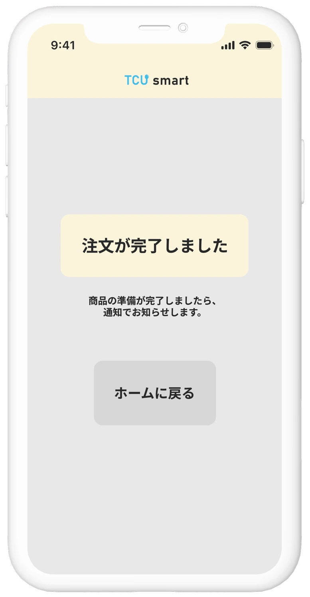
DXはキャッシュレス一本化と捉えられがちですが、それでは使い慣れた方法を持つ人が取り残されてしまいます。 そこで食堂にある券売機に画面のQRコードを読み取らせることで現金決済も残し、誰も取り残さないDXを目指しました。 また、混雑予報や受け取り場所の通知など、利用者が迷わないための工夫も加えました。
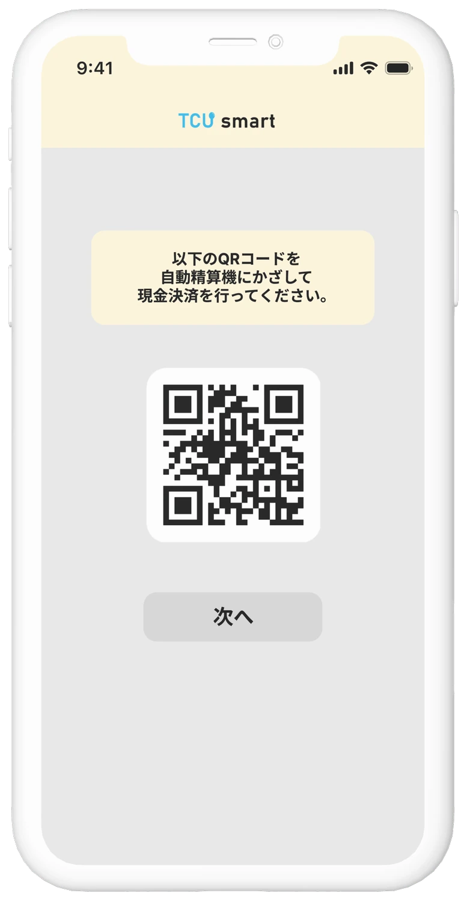
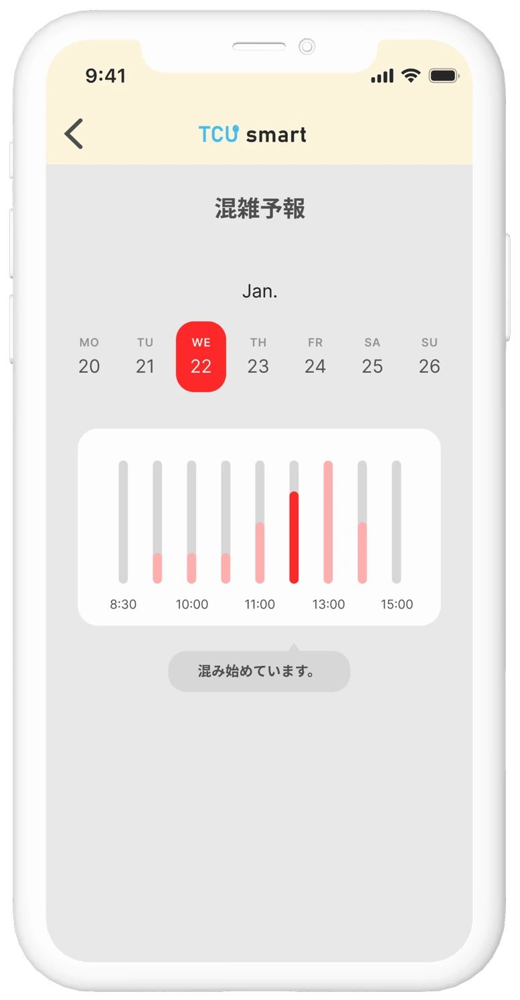
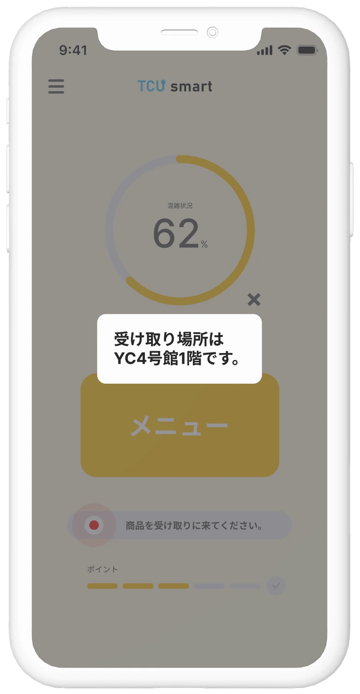
08Brand Design — ブランド設計
Service name / Logo
大学名である「TCU」を含めることで、東京都市大学に関連したサービスであることを伝えるようにした。 加えて、「smart」という言葉を組み合わせることで、効率的なキャンパスライフをサポートするDXサービスであるというイメージを持たせた。 「U」はスプーンをモチーフにしており、「食」に関するサービスであることをシンプルで直感的に伝えている。
Font / Color
サービスの主軸である「効率の良さ」を実現するため、操作のしやすさを重視し、視認性に優れたベーシックなフォント(源ノ角ゴシックVF)を採用。 食欲を促す暖色を基調に、シンプルで視認性の高い配色とすることで快適に利用できるデザインを目指した。
09Result — 成果
SDPBL学内優秀賞を受賞(364名中4位)。 SDPBLは東京都市大学が全学部・全学生を対象に必修で展開する独自の教育プログラムであり、 本プロジェクトはその中での成果です。